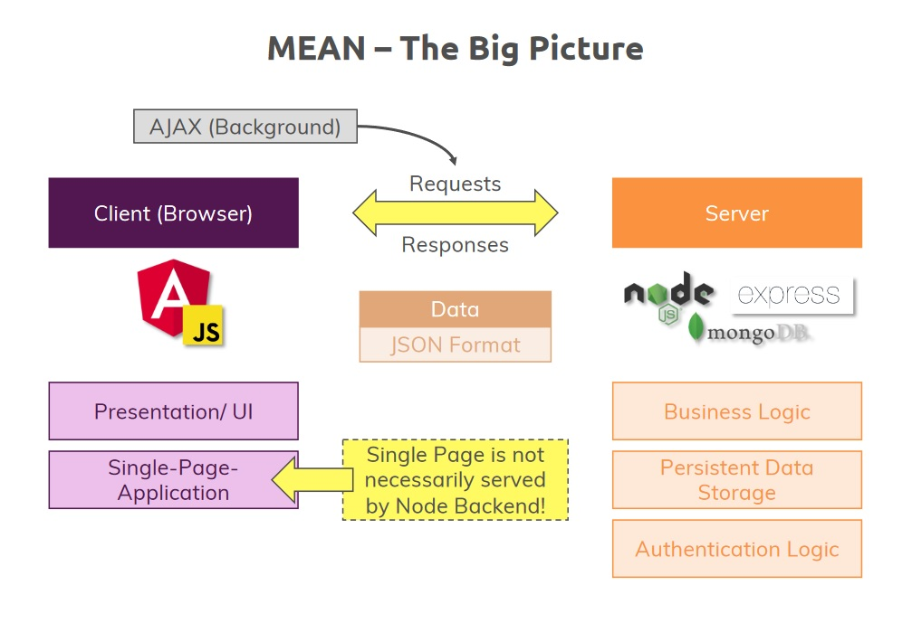

MEAN Stack

Layout
backend/
app.js
script.js
e2e/
node_modules/
src/
... # Other
Angular Frontend
Using Angular Material
c:\project> ng add @angular/material
Adding Node.js & Express Backend
Node Backend
// backend/app.js
const express = require('express');
const app = express();
app.use('/api/posts', (req, res, next) => {
console.log('middleware');
next();
});
module.exports = app;
Express Framework (Simple)
// server.js
const http = require('http');
const app = require('./backend/app');
const port = process.env.PORT || 3000;
app.set('port', port);
const server = http.createServer(app);
server.listen(port);
Express Framework (Improved)
// server.js
const app = require("./backend/app");
const debug = require("debug")("node-angular");
const http = require("http");
const normalizePort = val => {
var port = parseInt(val, 10);
if (isNaN(port)) {
// named pipe
return val;
}
if (port >= 0) {
// port number
return port;
}
return false;
};
const onError = error => {
if (error.syscall !== "listen") {
throw error;
}
const bind = typeof port === "string" ? "pipe " + port : "port " + port;
switch (error.code) {
case "EACCES":
console.error(bind + " requires elevated privileges");
process.exit(1);
break;
case "EADDRINUSE":
console.error(bind + " is already in use");
process.exit(1);
break;
default:
throw error;
}
};
const onListening = () => {
const addr = server.address();
const bind = typeof port === "string" ? "pipe " + addr : "port " + port;
debug("Listening on " + bind);
};
const port = normalizePort(process.env.PORT || "3000");
app.set("port", port);
const server = http.createServer(app);
server.on("error", onError);
server.on("listening", onListening);
server.listen(port);
Adding the GET Backend API Point
// backend/app.js
const express = require('express');
const app = express();
app.get('/api/posts', (req, res, next) => {
const posts = [
{
id: "f01dofoen",
title: "first server-side post",
content: "this is coming from the server"
},
{
id: "f02dofoen",
title: "second server-side post",
content: "this is coming from the server!"
}
];
console.log('posts fetched from /api/posts');
res.status(200).json({
message: 'Posts fetched successfully!',
posts: posts
});
});
module.exports = app;
Handling GET request with Angular
// posts.service.ts
constructor(private http: HttpClient) {}
getPosts() {
this.http.get<{message: string, posts: Post[]}>('http://localhost:3000/api/posts')
.subscribe((postData) => {
this.posts = postData.posts;
this.postsUpdated.next([...this.posts]);
});
}
Backend: CORS and Setting Headers
// backend/app.js
app.use((req, res, next) => {
res.setHeader("Access-Control-Allow-Origin", "*");
res.setHeader(
"Access-Control-Allow-Header",
"Origin, X-Requested-With, Content-Type, Accept"
);
res.setHeader(
"Access-Control-Allow-Methods",
"GET, POST, PATCH, DELETE, OPTIONS"
)
next();
});
Adding the POST Backend API Point
app.post('/api/posts', (req, res, next) => {
const post = req.body;
console.log(post);
res.status(201).json({
message: 'Post added successfully'
});
});
Integrating MongoDB
What is MongoDB?
- A NoSQL Database which stores "Documents" in "Collections" (instead of "Records" in "Tables" as in SQL)
- Store Application Data
- Enforces no Data Schema or Relations
- Easily connected to Node/Express (NOT to Angular!)
NoSQL vs SQL
- NoSQL
- MongoDB, CouchDB
- Enforces no Data Schema
- Less Focused on Relations
- "Independant Documents"
- Great for: Logs, Orders, (Chat) Messages
- SQL
- MySQL, MS SQL
- Enforces a Strict Data Schema
- Relations are a Core Feature
- Records are Related
- Great for: Shopping Carts, Contracts, Networks
- Connect Angular to the Database?
- NO!
- Secure Authentication is not really possible
- Full database would be exposed.
- Mongoose
- Package built on top of MongoDB driver
npm i mongoose --save- Constructing Post schema & model
// backend/models/post.js
const mongoose = require('mongoose');
const postSchema = mongoose.Schema({
title: { type: String, required: true },
content: { type: String, required: true }
});
module.exports = mongoose.model('Post', postSchema);
- Saving a Post
// backend/app.js
// in app.post
const post = new Post({
title: req.body.title,
content: req.body.content
});
post.save();
- Fetch Posts from collection
// backend/app.js
// in app.get
Post.find().then(documents => {
res.status(200).json({
message: 'Posts fetched successfully!',
posts: documents
});
});
- Delete from collection with ID
// backend/app.js
app.delete('/api/posts/:id', (req, res, next) => {
Post.deleteOne({ _id: req.params.id }).then(result => {
console.log(result);
res.status(200).json({message: 'Post deleted!'});
});
});
// src/app/posts/posts.service.ts
deletePost(postId: string){
this.http.delete('http://localhost:3000/api/posts/' + postId)
.subscribe(() => {
// console.log('Deleted!');
// updating posts
const updatedPosts = this.posts.filter(post => post.id !== postId);
this.posts = updatedPosts;
this.postsUpdated.next([...this.posts]);
});
}
- Adding Posts with an ID
// src/app/posts/posts.service.ts
addPost(title: string, content: string) {
const post: Post = { id: null, title, content};
this.http
.post<{message: string, postId: string}>('http://localhost:3000/api/posts', post)
.subscribe(responseData => {
const id = responseData.postId;
post.id = id;
this.posts.push(post);
this.postsUpdated.next([...this.posts]);
});
}
// backend/app.js
app.post('/api/posts', (req, res, next) => {
const post = new Post({
title: req.body.title,
content: req.body.content
});
post.save().then(result => {
console.log(result);
res.status(201).json({
message: 'Post added successfully',
postId: result._id
});
});
});
Enchancing the App
Adding Routing
// src/app/app-routing.module.ts
import { NgModule } from '@angular/core';
import { RouterModule, Routes } from '@angular/router';
import { PostListComponent } from './posts/post-list/post-list.component';
import { PostCreateComponent } from './posts/post-create/post-create.component';
const routes: Routes = [
{ path: '', component: PostListComponent },
{ path: 'create', component: PostCreateComponent }
];
@NgModule({
imports: [RouterModule.forRoot(routes)],
exports: [RouterModule]
})
export class AppRoutingModule {}
// import to app.module.ts
Header Links with RouterLink
<!--
src/app/header/header.component.html
-->
<mat-toolbar color="primary">
<span><a routerLink="/">MyMessages</a></span>
<ul>
<li>
<a routerLink="/create">New Post</a>
</li>
</ul>
</mat-toolbar>
Styling Links
/*
src/app/header/header.component.css
*/
ul {
list-style: none;
padding: 0;
margin: 0;
}
a {
text-decoration: none;
color: white;
}
.spacer {
flex: 1 1 auto;
}
<!--
src/app/header/header.component.html
-->
<mat-toolbar color="primary">
<span><a routerLink="/">MyMessages</a></span>
<span class="spacer"></span>
<ul>
<li>
<a mat-button routerLink="/create" routerLinkActive="mat-accent">New Post</a>
</li>
</ul>
</mat-toolbar>
Creating the Edit Form
- Using ActivatedRoute to find postId (if any) and distinguish create/edit modes
// src/app/posts/post-create.component.ts (not all file contents as of this point shown here)
export class PostCreateComponent implements OnInit {
enteredTitle = '';
enteredContent = '';
private mode = 'create';
private postId: string;
private post: Post;
constructor(public postsService: PostsService, public route: ActivatedRoute) {}
ngOnInit() {
this.route.paramMap.subscribe((paramMap: ParamMap) => {
if (paramMap.has('postId')) {
this.mode = 'edit';
this.postId = paramMap.get('postId');
this.post = this.postsService.getPost(this.postId);
} else {
this.mode = 'create';
this.postId = null;
}
});
}
<!-- src/app/posts/post-create.component.html (not all file contents as of this point shown here) -->
<!-- edit button -->
<a mat-button color="primary" [routerLink]="['/edit', post.id]">EDIT</a>
Finishing Edit Feature
- Creating PUT request
// backend/app.js
app.put('/api/posts/:id', (req, res, next) => {
const post = new Post({
_id: req.body.id,
title: req.body.title,
content: req.body.content
});
Post.updateOne({ _id: req.params.id }, post).then(result => {
console.log(result);
res.status(200).json({message: 'Update Successful!'});
});
});
- Adding updatePost method to Posts Service
// src/app/posts/post.service.ts
updatePost(id: string, title: string, content: string) {
const post: Post = { id, title, content };
this.http.put('http://localhost:3000/api/posts/' + id, post)
.subscribe(response => console.log(response));
}
- Update onAddPost to onSavePost and adding logic to differentiate modes
// src/app/posts/post-create.component.ts
onSavePost(form: NgForm) {
if (form.invalid) {
return;
}
if (this.mode === 'create'){
this.postsService.addPost(form.value.title, form.value.content);
} else {
this.postsService.updatePost(this.postId, form.value.title, form.value.content);
}
form.resetForm();
}
Updating Posts on the Server
- Changing updatePost to locally update posts after successful response
// src/app/posts/post.service.ts
updatePost(id: string, title: string, content: string) {
const post: Post = { id, title, content };
this.http.put('http://localhost:3000/api/posts/' + id, post)
.subscribe(response => {
const updatedPosts = [...this.posts];
const oldPostIndex = updatedPosts.findIndex(p => p.id === post.id);
updatedPosts[oldPostIndex] = post;
this.posts = updatedPosts;
this.postsUpdated.next([...this.posts]);
});
}
- Getting post data from server while on Post create component
- Add new route to backend API:
// backend/app.js
app.get('/api/posts/:id', (req, res, next) => {
Post.findById(req.params.id).then(post => {
if (post) {
res.status(200).json(post);
} else {
res.status(404).json({message: 'Post not found!'});
}
});
});
- Changing getPost in Posts Service
// src/app/posts/post.service.ts
getPost(id: string) {
return this.http.get<{_id: string, title: string, content: string}>('http://localhost:3000/api/posts/' + id);
}
- Updating post-create method to reflect changes
// src/app/posts/post-create/post-create.component.ts
this.postsService.getPost(this.postId).subscribe(postData => {
this.post = {id: postData._id, title: postData.title, content: postData.content};
});
- Now must change ngModel in HTML file to check if post title & content exists
<!-- src/app/posts/post-create.component.html -->
[ngModel]="post?.title"
[ngModel]="post?.content"
Reorganizing Backend Routes
- Moving all routes in app.js to new folder & file backend/routes/posts.js
// backend/routes/posts.js
import { Router } from 'express';
const Post = require('../models/post');
const router = Router();
// ...
module.exports = router;
- Using express router and exporting. Require in app.js and use
// backend/app.js
const postsRoutes = require('./routes/posts');
// ...
app.use(postsRoutes);
- Change to limit to /api/posts routes
// backend/app.js
app.use('/api/posts', postsRoutes);
// backend/routes/posts.js
router.post('', // ...
router.put('/:id', // ...
// etc
Adding Loading Spinners and Redirecting to Messages page on Edit/Add
- Use isLoading property in list and create post components
- Set to false initially, true when needed
isLoading = false;
- Redirects
this.router.navigate(['/']);
- Using mat-spinner with *ngIf
<mat-spinner *ngIf="isLoading"></mat-spinner>
<mat-accordion multi="true" *ngIf="posts.length > 0 && !isLoading">
Adding Image Uploads to our App
- Allowing an uploaded image with Post
Adding the File Input Button
- Adding button and an input, proxy button to input and hide
<div>
<button mat-stroked-button type="button" (click)="filePicker.click()">Pick Image</button>
<input type="file" #filePicker>
</div>
- Hiding with CSS
input[type="file"] {
visibility: hidden;
}
Converting the Form from a Template Driven to a Reactive Approach
- Going from Angular handling form, registering controls with ngModel, to Reactive with advanced features
- Features include custom validators
- We define all of this, including controls, in Reactive approach
- Must import to App Module:
// replace FormsModule with ReactiveFormsModule in import and imports array
import { ReactiveFormsModule } from '@angular/forms';
// ...
imports: [
//...
ReactiveFormsModule,
//...
]
- Remove the ngModel, postForm ngForm, and validators
- Now create form programmatically in Typescript
- Starting with form Property
// import & use FormGroup instead of NgForm:
// import { NgForm } from '@angular/forms';
import { FormGroup } from '@angular/forms';
// ...
form: FormGroup;
// define in ngOnInit :
this.form = new FormGroup({
title: new FormControl(null, {
validators: [Validators.required, Validators.minLength(3)]
}),
content: new FormControl(null, {
validators: [Validators.required]
})
});
// for form reset, use this.form.reset() instead:
this.form.reset();
// form.resetForm();
- Changes to HTML:
<form [formGroup]="form" (submit)="onSavePost()" *ngIf="!isLoading">
<mat-form-field>
<input
matInput
type="text"
formControlName="title"
placeholder="Post Title">
<mat-error *ngIf="form.get('title').invalid">Please enter a post title.</mat-error>
</mat-form-field>
Adding Image Controls to Store the Image
- First add change event to input control:
<input type="file" #filePicker (change)="onImagePicked($event)">
- Implement onImagePicked:
onImagePicked(event: Event) {
const file = (event.target as HTMLInputElement).files[0];
this.form.patchValue({ image: file });
this.form.get('image').updateValueAndValidity();
}
Adding Image Preview
- Add to HTML template:
<div class="image-preview">
<img src="" [alt]="form.value.title">
</div>
- New property in TS file and access with FileReader:
imagePreview: string;
// ...
// in onImagePicked:
// ...
const reader = new FileReader();
reader.onload = () => {
this.imagePreview = (reader.result as string);
};
reader.readAsDataURL(file);
- Adjust HTML element
<div class="image-preview" *ngIf="imagePreview !== '' && imagePreview">
<img [src]="imagePreview" [alt]="form.value.title">
</div>
Setting up a validator with Mime-Type Validator
- Create file mime-type.validator.ts in posts-create
- will be async
// src/app/posts/post-create/mime-type.validator.ts
import { AbstractControl } from '@angular/forms';
import { Observable, Observer } from 'rxjs';
export const mimeType = (control: AbstractControl): Promise<{[key: string]: any}> | Observable<{[key: string]: any}> => {
const file = control.value as File;
const fileReader = new FileReader();
const frObs = new Observable(
(observer: Observer<{[key: string]: any}>) => {
fileReader.addEventListener('loadend', () => {
const arr = new Uint8Array(fileReader.result as ArrayBuffer).subarray(0, 4);
let header = '';
let isValid = false;
// tslint:disable-next-line: prefer-for-of
for (let i = 0; i < arr.length; i++) {
header += arr[i].toString(16);
}
switch (header) {
case '89504e47':
isValid = true;
break;
case 'ffd8ffe0':
case 'ffd8ffe1':
case 'ffd8ffe2':
case 'ffd8ffe3':
case 'ffd8ffe8':
isValid = true;
break;
default:
isValid = false; // Or you can use the blob.type as fallback
break;
}
if (isValid) {
observer.next(null);
} else {
observer.next({ invalidMimeType: true });
}
observer.complete();
});
fileReader.readAsArrayBuffer(file);
}
);
return frObs;
};
Adding Server Side Upload
npm i --save multer
- Attach to certain routes that should be able to accept files
- Import to backend/routes/posts.js
const multer = require('multer') - Use diskStorage
// backend/posts.js
const storage = multer.diskStorage({
destination: (req, file, cb) => {
const isValid = MIME_TYPE_MAP[file.mimetype];
let error = new Error('Invalid mime type');
if (isValid) {
error = null;
}
cb(error, 'backend/images');
},
filename: (req, file, cb) => {
const name = file.originalname.toLowerCase().split(' ').join('-');
const ext = MIME_TYPE_MAP[file.mimetype];
cb(null, name + '-' + Date.now() + '.' + ext);
}
});
// pass as arg into post route:
router.post('', multer({storage}).single('image'), (req, res, next) => {
// ...
Adding the code to Angular and Front-end to Upload File
- In addPost (posts service), now use FormData instead of JSON
// posts.service.ts
addPost(title: string, content: string, image: File) {
// const post: Post = { id: null, title, content};
const postData = new FormData();
postData.append('title', title);
postData.append('content', content);
postData.append('image', image, title);
this.http
.post<{message: string, postId: string}>(
'http://localhost:3000/api/posts',
postData
)
.subscribe(responseData => {
const post: Post = {
id: responseData.postId,
title,
content
};
this.posts.push(post);
this.postsUpdated.next([...this.posts]);
this.router.navigate(['/']);
});
}
Working with file URL
- Add to posts.js, posts.service.ts, post-create, and update models
// posts.js
// in router.post
const url = req.protocol + '://' + req.get('host');
const post = new Post({
title: req.body.title,
content: req.body.content,
imagePath: url + '/images/' + req.file.filename
});
// ...
// use of spread syntax for post instance:
message: 'Post added successfully',
res.status(201).json({
message: 'Post added successfully',
post: {
...createdPost,
id: createdPost._id
// title: createdPost.title,
// content: createdPost.content,
// imagePath: createdPost.imagePath
}
});
// posts.service.ts
return {
title: post.title,
content: post.content,
id: post._id,
imagePath: post.imagePath
};
// imagePath set to null for now in post-create component
Fetch images on the Front-End
- First, in HTML
<!-- post-list component in between post title and content -->
<div class="post-image">
<img [src]="post.imagePath" [alt]="post.title">
</div>
- Use Express & Path to serve images to front-end
app.use('/images', express.static(path.join('backend/images')));
Edit/Update Posts
- Change our update function
// posts.service.ts
// in updatePost
// const post: Post = { id, title, content, imagePath: null };
let postData: Post | FormData;
if (typeof(image) === 'object') {
postData = new FormData();
postData.append('title', title);
postData.append('content', content);
postData.append('image', image, title);
} else {
postData = {
id,
title,
content,
imagePath: image
};
}
- Add a check for control value in mime-type validator
if (typeof(control.value) === 'string') {
return of(null);
}
- Add imagePath to what getPost returns in post service
getPost(id: string) {
return this.http.get<{
_id: string,
title: string,
content: string,
imagePath: string
}>('http://localhost:3000/api/posts/' + id);
}
- Add a check for undefined in put request '/:id', and if it is a file, use same logic as in post request
// posts.js, in router.put('/:id')
let imagePath = req.body.imagePath;
if (req.file) {
const url = req.protocol + '://' + req.get('host');
imagePath = url + '/images/' + req.file.filename
}
const post = new Post({
_id: req.body.id,
title: req.body.title,
content: req.body.content,
imagePath
});
- Also must append id to prevent new one being generated in updatePost within post service:
postData.append('id', id);
Adding Pagination
- Sets of Posts, pages
- Also give user flexibility to decide # of posts on page.
- Use Angular Material
import { ..., ... MatPaginatorModule, ... } from '@angular/material';imports: [..., ..., MatPaginatorModule,...]
Adding the Component
-
In post-list.component.html
<mat-paginator [length]="totalPosts" [pageSize]="postsPerPage" [pageSizeOptions]="pageSizeOptions" (page)="onChangedPage($event)"></mat-paginator> -
In post-list.component.ts
totalPosts = 10;
postsPerPage = 2;
pageSizeOptions = [1, 2, 5, 10];
// ...
onChangedPage(pageData: PageEvent) {
- Fix spacing in CSS
mat-paginator { margin-top: 1rem; }
Working on Pagination Backend
- Implement pagination on get all posts using Query Parameters
router.get('', (req, res, next) => {
const pageSize = req.query.pagesize;
const currentPage = req.query.page;
const postQuery = Post.find();
if (pageSize && currentPage) {
postQuery
.skip(pageSize * (currentPage - 1))
.limit(pageSize);
}
postQuery.then(documents => {
res.status(200).json({
message: 'Posts fetched successfully!',
posts: documents
});
});
});
Connecting the Angular Paginator to the Backend
- Add query params to getPosts() in posts service
getPosts(postsPerPage: number, currentPage: number) {
const queryParams = `?pagesize=${postsPerPage}&page=${currentPage}`;
this.http
.get<{ message: string, posts: any }>(
'http://localhost:3000/api/posts' + queryParams
)
.pipe(map((postData) => {
return postData.posts.map(post => {
return {
title: post.title,
content: post.content,
id: post._id,
imagePath: post.imagePath
};
});
}))
.subscribe(transformedPosts => {
this.posts = transformedPosts;
this.postsUpdated.next([...this.posts]);
});
}
- Adjust in list component
// ngOnInit
this.postsService.getPosts(this.postsPerPage, this.currentPage);
//...
onChangedPage(pageData: PageEvent) {
this.currentPage = pageData.pageIndex + 1;
this.postsPerPage = pageData.pageSize;
this.postsService.getPosts(this.postsPerPage, this.currentPage);
}
Fetching posts correctly
- Display spinner by integrating isLoading to new function
- Adjust get all posts query
router.get('', (req, res, next) => {
const pageSize = +req.query.pagesize;
const currentPage = +req.query.page;
const postQuery = Post.find();
let fetchedPosts;
if (pageSize && currentPage) {
postQuery
.skip(pageSize * (currentPage - 1))
.limit(pageSize);
}
postQuery
.then(documents => {
fetchedPosts = documents;
return Post.count();
})
.then(count => {
res.status(200).json({
message: 'Posts fetched successfully!',
posts: fetchedPosts,
maxPosts: count
});
});
});
- Update Posts Service
- Subject:
private postsUpdated = new Subject<{posts: Post[], postCount: number}>(); - Get posts
getPosts(postsPerPage: number, currentPage: number) {
const queryParams = `?pagesize=${postsPerPage}&page=${currentPage}`;
this.http
.get<{ message: string, posts: any, maxPosts: number }>(
'http://localhost:3000/api/posts' + queryParams
)
.pipe(
map(postData => {
return { posts: postData.posts.map(post => {
return {
title: post.title,
content: post.content,
id: post._id,
imagePath: post.imagePath
};
}),
maxPosts: postData.maxPosts
};
}))
.subscribe(transformedPostData => {
this.posts = transformedPostData.posts;
this.postsUpdated.next({posts: [...this.posts], postCount: transformedPostData.maxPosts});
});
}
Finishing Touches
- Adjust subscribe in posts service, update and add post, to just navigate. Not needed here anymore.
- Change delete post to just return the http request
- Adjust post list component to subscribe and call get posts:
onDelete(postId: string) {
this.isLoading = true;
this.postsService.deletePost(postId).subscribe(() => {
this.postsService.getPosts(this.postsPerPage, this.currentPage);
});
}
- Adjust subscription in post list component NgOnInit
ngOnInit() {
this.isLoading = true;
this.postsService.getPosts(this.postsPerPage, this.currentPage);
this.postsSub = this.postsService.getPostUpdateListener()
.subscribe((postData: {posts: Post[], postCount: number}) => {
this.isLoading = false;
this.totalPosts = postData.postCount;
this.posts = postData.posts;
});
}